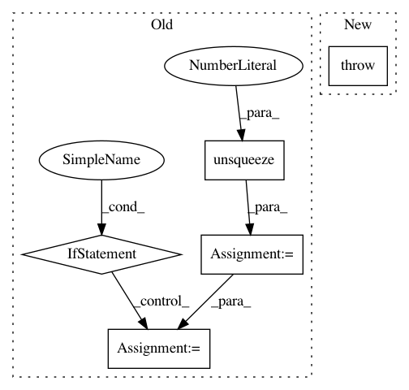

f411e5792861d96fc46b938aed98e55d6f263459,service.py,LabelService,label,#LabelService#Any#,54
Before Change
A (most likely label, probability) tuple
wav_data = np.frombuffer(wav_data, dtype=np.int16) / 32768.
model_in = model.preprocess_audio(wav_data, 40, self.filters).unsqueeze(0)
model_in = torch.autograd.Variable(model_in, requires_grad=False)
if not self.no_cuda:
model_in = model_in.cuda()
predictions = F.softmax(self.model(model_in).squeeze(0).cpu()).data.numpy()
return (self.labels[np.argmax(predictions)], max(predictions))
def stride(array, stride_size, window_size):
After Change
return sum(accuracy) / len(accuracy)
def label(self, wav_data):
raise NotImplementedError
class Caffe2LabelService(LabelService):
def __init__(self, onnx_filename, labels):
self.labels = labels
In pattern: SUPERPATTERN
Frequency: 3
Non-data size: 5
Instances
Project Name: castorini/honk
Commit Name: f411e5792861d96fc46b938aed98e55d6f263459
Time: 2017-10-17
Author: r33tang@uwaterloo.ca
File Name: service.py
Class Name: LabelService
Method Name: label
Project Name: arraiy/torchgeometry
Commit Name: e06eee5deec11dc03d6c4975eb9a57f2bc6edd30
Time: 2019-05-28
Author: jiangwei1993@gmail.com
File Name: kornia/utils/image.py
Class Name:
Method Name: tensor_to_image
Project Name: arraiy/torchgeometry
Commit Name: e0e673fa73d2e71ec1c71d60deb6ff9151f387fd
Time: 2019-01-21
Author: edgar.riba@gmail.com
File Name: torchgeometry/conversions.py
Class Name:
Method Name: quaternion_to_angle_axis